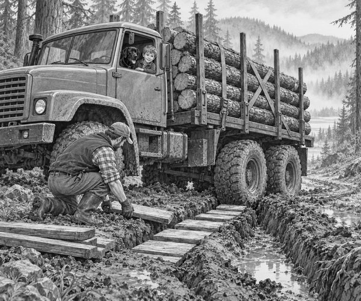

FICTION
Rain had soaked the forest for three days.
Now the old bog road was brown, wet and slippery.
Dad's six-wheel truck waited beside a stack of timber.
The logs were needed at Fern Gorge.
Rangers were building a new footbridge there.
Without the timber, walkers could not cross the stream.
Tom climbed into the cab.
Scout the black Labrador sat beside him.
Dad used the truck's crane to lift the logs.
He placed them between tall metal stakes on the load bed.
Then he pulled two strong straps across the timber.
Tom checked the strap handles.
Both were locked.
“The stakes hold the logs at the sides,” Dad said.
“The straps stop them bouncing or sliding.”
Hauling fact: Logs are round, so they can roll. Timber trucks use strong upright stakes and secure straps to keep the load in place.
The truck rumbled into the pines.
Its wide tyres pressed into the soft road.
Dad chose a low gear.
The truck moved slowly with a steady pull.
At first, the ruts were shallow.
Then Tom saw a dark trench across the track.
Rainwater filled the bottom.
“That rut is deep,” he said.
Dad stopped before the soft ground.
He did not race into the mud.
First, he walked along the safe edge of the road.
He used a long stick to check the ground.
The middle of the rut was soft and deep.
But one side had firm stones under the mud.
“That will be our path,” Dad said.
He took flat traction boards from the truck.
Tom stayed safely inside with Scout.
Dad laid the boards over the worst part of the rut.
They made a short, firm road for the tyres.
Then Dad returned to the cab.
He checked that Tom and Scout were settled.
He selected the lowest gear.
The first tyre rolled onto a board.
The wood creaked, but stayed flat.
The truck crawled forwards.
One wheel dropped into the rut.
Dad kept his foot gentle.
The tyre gripped the board.
It climbed out without spinning.
The second axle followed.
Then the third.
All six wheels reached firm ground.
Scout gave one proud bark.
Dad stopped and checked the load again.
The stakes were straight.
The straps were still tight.
Road fact: Spinning tyres can dig deeper into soft mud. A low gear and a gentle, steady push can help a heavy truck keep its grip.
The final hill climbed above the bog.
The engine hummed in low gear.
Soon, the new footbridge came into view.
The rangers waved from Fern Gorge.
Dad's crane lifted the timber from the truck.
Before long, the first beams stretched across the stream.
Tom looked back towards the muddy road.
“We did not beat the bog with speed,” he said.
Dad smiled.
“We beat it with a good plan.”
The timber run was complete.
1. What was the timber needed for?
2. Why did Dad stop before the deep rut?
3. What helped the tyres cross the soft mud?